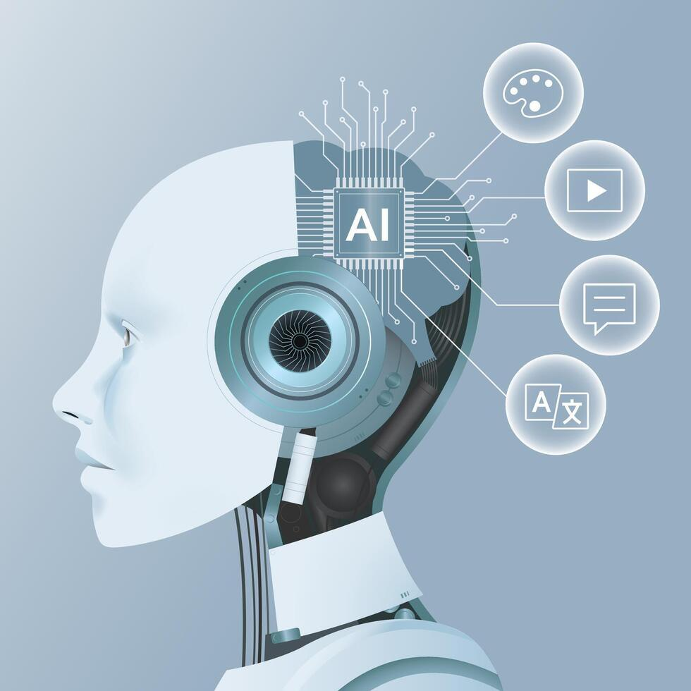
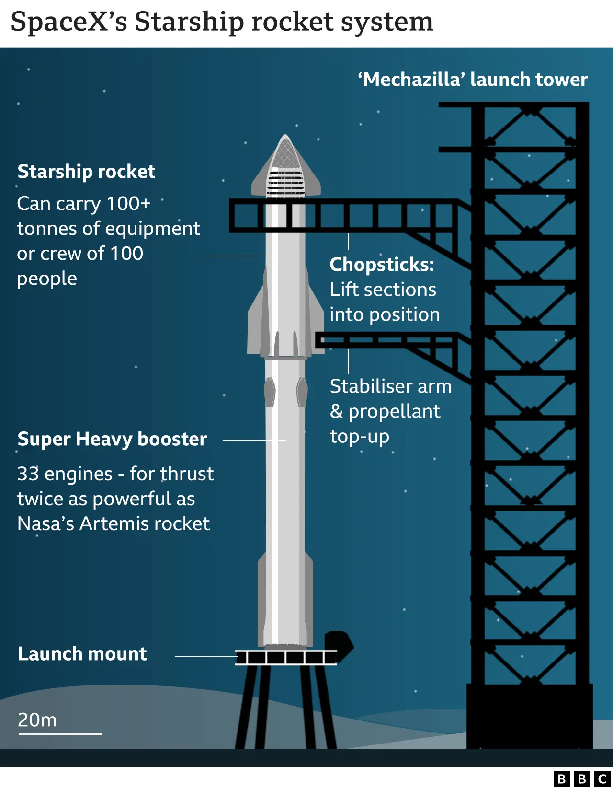
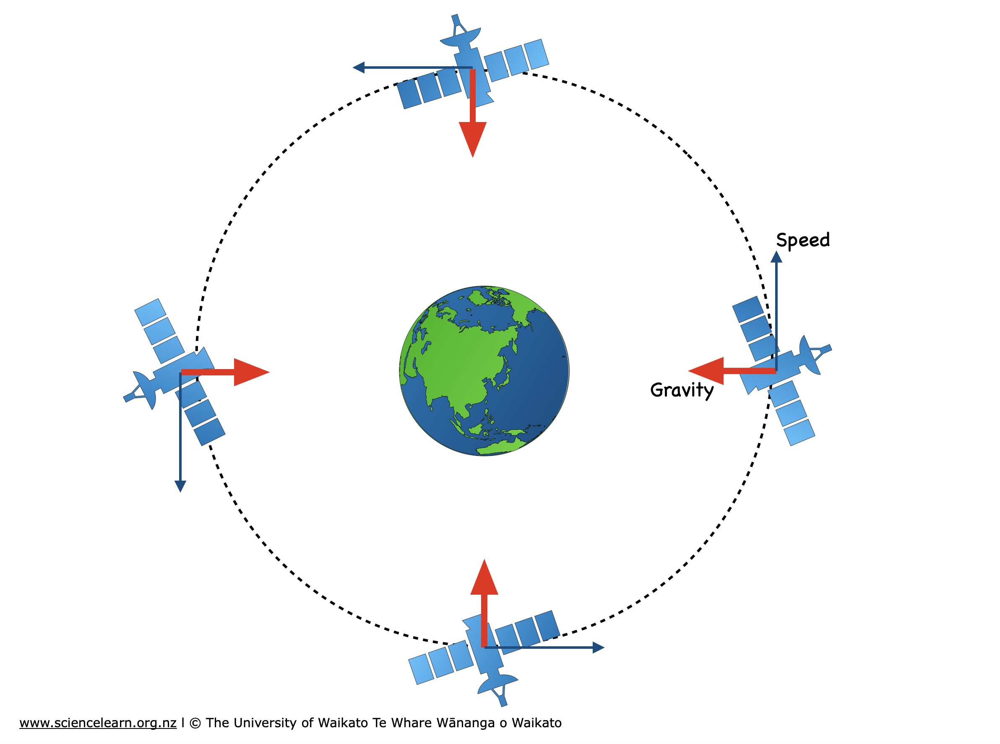
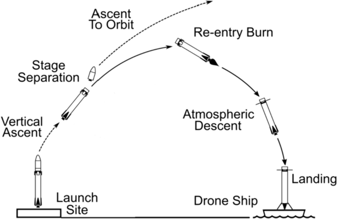

Eksplorasi Teknologi Masa Depan
Perkembangan Dunia Maya Terkini
Temui bagaimana teknologi moden mengubah kehidupan manusia melalui AI, angkasa, satelit, robotik dan mobiliti masa depan.
Teknologi dan Kecerdasan Buatan (AI)
Peranti mudah alih dan gajet baharu kini dipacu sepenuhnya oleh fungsi AI untuk pengalaman pengguna yang lebih pintar.
Akses maklumat tanpa sempadan membolehkan pencapaian capaian internet yang tinggi di peringkat nasional.

Teknologi Angkasa & Mobiliti Global
Roket terbesar dunia milik SpaceX berjaya melakukan pendaratan mekanikal booster menggunakan lengan menara “chopstick”, membuka era penerbangan angkasa murah ke Bulan dan Marikh.

Mega-Konstelasi Satelit Global
Jaringan seperti Starlink membekalkan internet satelit berkelajuan tinggi terus ke kawasan paling terpencil di seluruh pelosok bumi.

Kenderaan eVTOL (Electric Vertical Takeoff and Landing)
Kereta terbang dan teksi udara elektrik mula mencatatkan penerbangan komersial sebenar untuk memintas kesesakan jalan raya bandar.

Robot Humanoid Komersial
Robot berwujud manusia seperti Tesla Optimus mula memasuki sektor pembuatan, logistik, dan bantuan domestik secara meluas.
Kos Tenaga & Jejak Karbon Teknologi
Setiap carian Google, aliran video, dan pertanyaan AI memerlukan tenaga yang ketara. Pusat data global menganggarkan 1–1.5% penggunaan elektrik dunia, dan angka ini meningkat pesat dengan AI generatif.
Contoh: satu pertanyaan ChatGPT menghabiskan ~10× tenaga carian Google biasa; aliran video 4K selama 1 jam = ~300g CO₂; melatih satu model AI besar boleh melebihi jejak karbon 5 kereta sepanjang hayatnya.